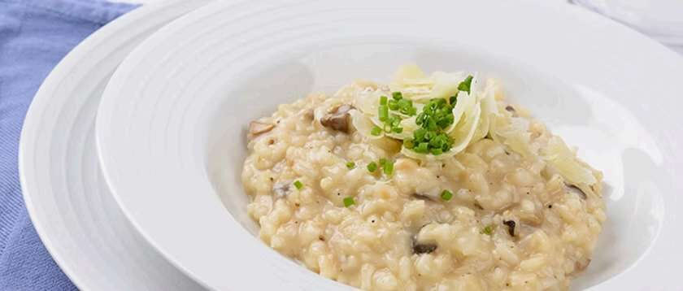

Creamy Parmesan Risotto

Try this creamy parmesan risotto recipe made with rice, onion, garlic, white wine, cheese. (Course: Entree · Cuisine: Italian)
Ingredients
- 3 to 4 cups low-sodium chicken broth
- 4 tablespoons unsalted butter
- 1 medium onion finely chopped
- 1 clove garlic minced
- 1 1/2 cups Arborio rice
- 1 cup dry white wine such as Pinot Blanc or Sauvignon Blanc
- 1/2 teaspoon kosher salt
- 1/4 teaspoon freshly ground black pepper
- 1/2 cup freshly grated Parmesan plus more for serving
Instructions
- Melt 2 tablespoons of the butter in a large saucepan over medium heat. Add the onion and garlic and cook, stirring occasionally, until the onion is softened, about 5 minutes.
- Add the rice and cook, stirring constantly, for 2 minutes.
- Add the wine, reduce heat to medium-low, and cook, stirring frequently, until the liquid is absorbed.
- Add the broth, 1/2 cup at a time, stirring frequently when you first add it and waiting until it is completely absorbed before adding more. This should take about 30 minutes total.
- Remove from heat. Add the salt, pepper, Parmesan, and remaining butter, and stir until the butter melts.
- Spoon the risotto into bowls. Sprinkle with the zest and parsley (if using).
Notes
- The last step mentions zest and parsley, which aren't in the ingredient list (as in the original). The page title is spelled "Rissoto".